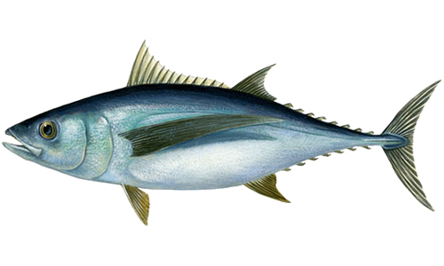

Albacore Tuna
Long pectoral fins, which reach to behind the anus and by their dark blue backs and blue-grey flanks and belly. Due to its white colored meat albacore is also called "the chicken of the sea". As canned products it is quite popular in the States, where it is marketed as "White Tuna". The meat has a somewhat dry texture, and the taste comes close to the taste of chicken meat.
Scientific name: Thunnus Alalunga
Other Names: Longfin, Albie, Pigfish, Pacific Albacore
Season: May to September
Availability: May to September
Depth of Catch: 2,000 to 5,000 fathoms
Catch Area: British Columbia, Oregon, Washington, California
How To Store: Whole fish should be buried in ice with the belly cavity full of ice, since this is where deterioration happens most quickly. Adding ice to the belly slows this enzymatic process.
Range of Shelf Life: Three to seven days, depending on the quality of handling the fish has received.